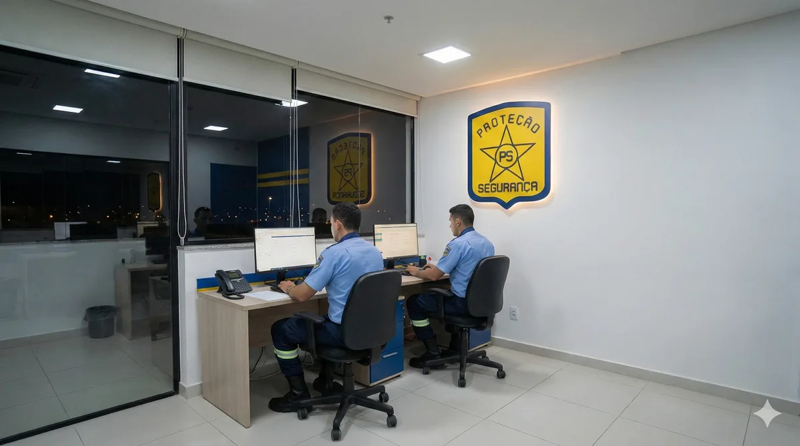

Limpeza
Limpeza Pesada vs. Limpeza de Manutenção: Entenda as Diferenças
Descubra quando usar limpeza pesada ou de manutenção em empresas e condomínios.
Ler artigoConteúdos práticos para gestores que precisam manter a operação organizada, segura e eficiente — direto de quem vive Facilities há +28 anos.
Colaboradores Treinados por Nós
Clientes Atendidos
Anos de Experiência no Mercado
Supervisão Ativa com Relatórios
Nem toda empresa de portaria entrega o mesmo padrão de segurança e organização. Veja os critérios que realmente importam antes de fechar contrato.
Descubra quando usar limpeza pesada ou de manutenção em empresas e condomínios.
Ler artigoDescubra como escolher os produtos de limpeza profissional certos para cada superfície e necessidade.
Ler artigoDicas para garantir a limpeza e a conservação de escritórios diariamente.
Ler artigoDescubra os cuidados essenciais para a limpeza industrial em fábricas e escritórios.
Ler artigoDicas práticas para dimensionar sua equipe de limpeza terceirizada de forma eficiente.
Ler artigoEntenda as principais diferenças entre limpeza, conservação e higienização para melhorar a percepção de valor do seu serviço.
Ler artigoAprenda a criar um cronograma de limpeza profissional eficaz para sua empresa.
Ler artigoDescubra as rotinas essenciais de limpeza terceirizada para condomínios e como garantir a conservação do seu patrimônio.
Ler artigoEntenda como funciona a limpeza terceirizada para empresas e suas vantagens.
Ler artigoEntenda como medir a qualidade de serviços terceirizados em facilities através de SLA e indicadores.
Ler artigoDescubra os principais erros ao contratar serviços terceirizados e como evitá-los.
Ler artigoEntenda como realizar a transição de equipe interna para terceirizada sem interrupções.
Ler artigoEntenda como a centralização de fornecedores em facilities melhora a governança e a eficiência operacional.
Ler artigoDescubra quais serviços podem ser terceirizados em facilities para empresas e como isso pode beneficiar seu negócio.
Ler artigoDicas essenciais para selecionar uma empresa de facilities confiável e eficiente.
Ler artigoIdentifique os sinais de que sua operação interna de facilities precisa de gestão profissional.
Ler artigo
FacilitiesDescubra como a terceirização de facilities pode diminuir seus custos operacionais e aumentar a produtividade.
Ler artigoDescubra o que é Facilities Management e como ele pode beneficiar empresas e condomínios.
Ler artigoDescubra o processo de implantação de serviços de facilities em sua empresa e como garantir eficiência na gestão operacional.
Ler artigoEntenda quando faz sentido terceirizar a limpeza da sua empresa e quais cuidados evitam dor de cabeça no contrato.
Ler artigoPequenos problemas não resolvidos viram prejuízos grandes. Veja como a zeladoria preventiva protege o patrimônio da empresa.
Ler artigoFacilities Management vai muito além de terceirizar serviços. Entenda o conceito e como ele reduz custos de forma estruturada.
Ler artigoNem toda empresa de portaria entrega o mesmo padrão de segurança e organização. Veja os critérios que realmente importam.
Ler artigoGestor de Segurança Privada · Membro da CIPA
Gestor de Segurança Privada e membro da CIPA (Comissão Interna de Prevenção de Acidentes). Responsável pela supervisão operacional e pela excelência em cada detalhe das operações de Facilities da PS Proteção.
LinkedInFale com nossa equipe e receba uma proposta personalizada de acordo com a sua operação.